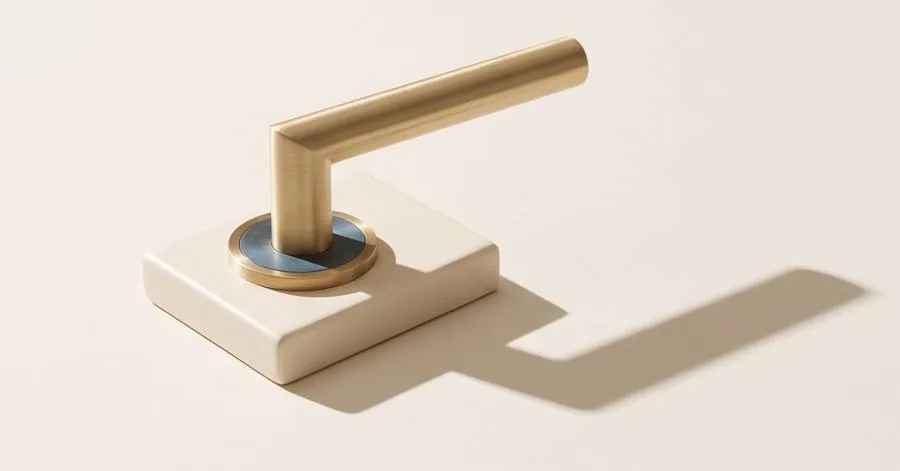
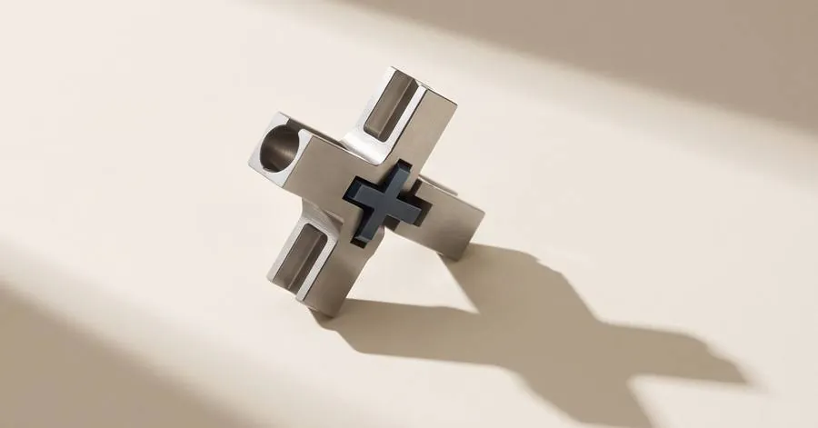
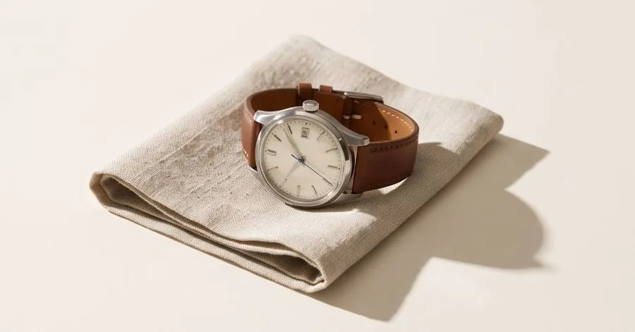

A social media meghalt.Social media is dead. Az érdeklődés vette át a helyét.Interest has taken its place.
Igen, a nevünkben még ott a social. A stream maradt. Ami benne folyik, az változott.Yes, our name still says social. The stream stayed. What flows in it changed.
A SocialStream interest media ügynökség Tenerifén és Budapesten. Videó tartalom, social jelenlét és performance hirdetések egy growth rendszerben, ami az új kor szabályaira épült.
Ingyenes auditI. törvény
10 000 követő
40kedvelés0,4%
A követőszáma régi kor relikviája.Follower count isa relic of the old age.
Az új korban minden poszt tiszta lappal indul. Nem az számít, hányan követnek, hanem hogy hányan nézik végig.
II. törvény
A figyelmet nem lehet megvenni. Csak kiérdemelni.Attention cannot be bought. Only earned.
Minden megjelenésért a legjobb alkotókkal versenyzel, nem a konkurenciáddal. Ami érdekes, azt a platform ingyen viszi el milliókhoz. Ami unalmas, azt büdzsével sem lehet megmenteni.For every impression you compete with the best creators, not with your competitors. What is interesting, the platform carries to millions for free. What is boring, no budget can save.
III. törvény
Aki a régi szabályokkal játszik, veszít.Whoever plays by the old rules loses.
A legtöbb vállalkozás még a régi kor szabályaival játszik: posztol és reménykedik. Az új kor stratégiája: adatból tudni, mi érdekli az embereket, és rendszert építeni, ami az érdeklődést bevétellé alakítja.
A régi kor
- Posztolni
- Reménykedni
Az új kor
- Adatból tudni, mi érdekel
- Rendszert építeni
- Az érdeklődésből bevétel
Ami megállítja a hüvelykujjat.What stops the thumb.
Képkockák az ügyfeleinknek készült videókból.
Hat szolgáltatás. Egy stratégia.Six services. One strategy.
Nem ígéretek. Számok.Not promises. Numbers.
81×
ROAS, a legjobb eredményünk e-commerce kampányban
Ajtó webshop · Google Performance Max

79M Ft
bevétel egy hét alatt, B2B Meta kampányból
Csarnoképítő ügyfél · Meta

23×
ROAS ünnepi kampányban, 8M+ Ft bevétel
Karóra webshop · Karácsony

105Ft
jelentkezőnként: ~5700 jelentkező 600K Ft költésből
Egészségügyi webinár · lead generation
300M+ Ft kezelt büdzsé 2022 óta.
Nem mi mondjuk. Ők mondják.We don't say it. They do.

A korszakváltást belülről láttam.I saw the shift from the inside.
Dániai tanulmányaim alatt szereztem meg az első ügyfelemet. Aztán Meta Marketing Pro-ként közelről láttam, hogyan gondolkodnak a legkomolyabb márkák, amikor valódi pénz van a kampányban. 2022-ben alapítottam a SocialStreamet; azóta 300M+ Ft büdzsét kezeltünk.
Olivér, alapító és kampánystratéga
Olyan márkákkal dolgozunk, amelyek megbízható, stabil bevétellel rendelkeznek, hosszú távú sikerre törekszenek, és befektetésnek tekintik a marketinget.
Havonta legfeljebb két új partner.
A piacod már az új korban jár. A marketinged is?Your market already lives in the new age. Does your marketing?
30 perces ingyenes audit: megnézzük a kampányaidat, a landing page-edet és az ajánlatodat, és őszintén megmondjuk, hol játszol még a régi kor szabályaival, még fizetés előtt.
- Hossz
- 30 perc
- Ár
- Ingyenes, kötelezettség nélkül
- Kapacitás
- Havonta legfeljebb két új partner
- Nem neked, ha
- egy éjszaka alatti sikert vagy olcsó félmegoldást keresel